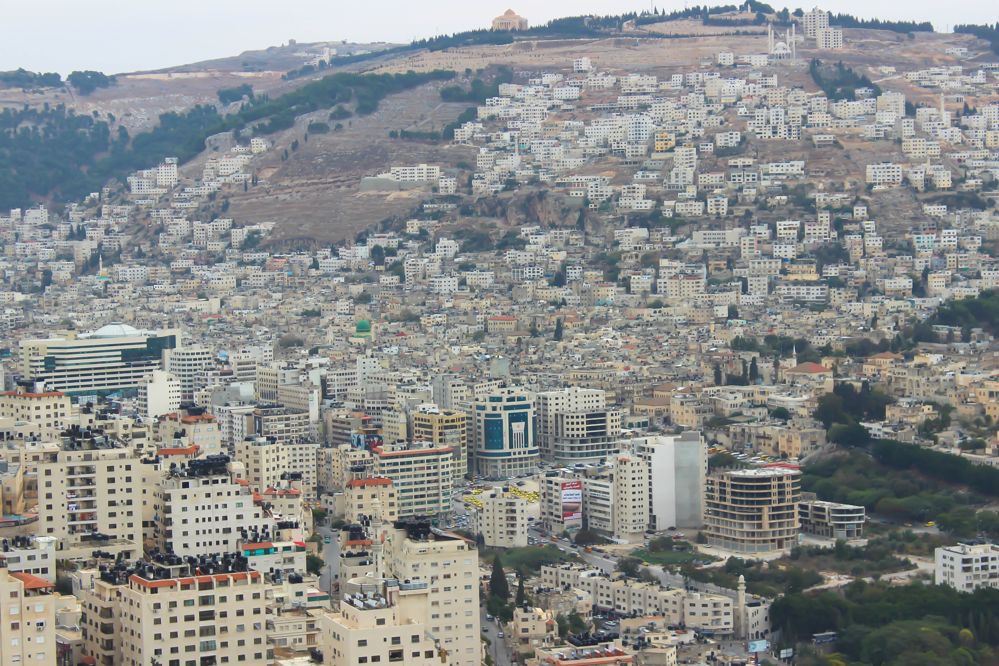
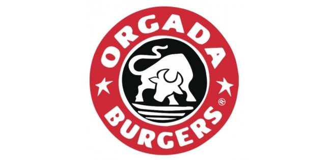

Mohammad Izzat Hassan Hussein

اسمي محمد حسين بدرس انظمه معلومات حاسوبيه في جامعه القدس المفتوحه
Nablus

نابلس إحدى أكبر المدن الفلسطينية سكانًا وأهمها موقعًا. وهي مقر أكبر الجامعات الفلسطينية. تعتبر نابلس مركزاً لشمال الضفة الغربية إضافةً إلى كونها عاصمة لمحافظة نابلس التي تضم 56 قرية ويُقدر عدد سكانها بقرابة (388,321) نسمة حسب إحصاءات عام 2017. تُعرف أيضا بأسماء جبل النار ودمشق الصغرى وعش العلماء وملكة فلسطين غير المتوجة.
